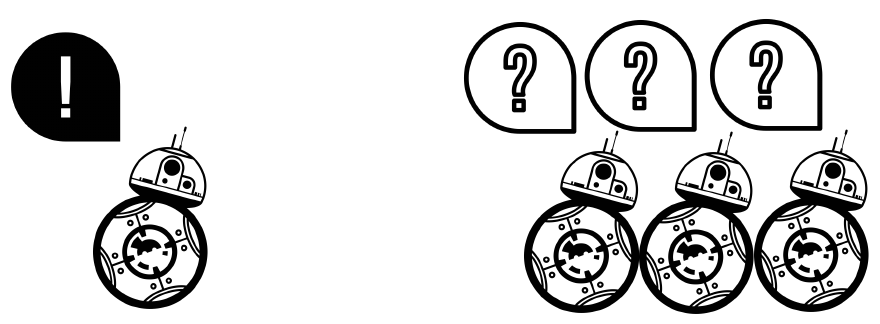

Comité d'accompagnement
08/10/2019


Hello. i'm going to present my work abt communication in robot sw
AutoMoDe-Gianduja 1 and 2
Comparison of methods, Fiorella, AutoMoDe+ER
AutoMoDe, Evolutionary, Loop-functions, ...

It is possible to automatically design a swarm of communicating robots using AutoMoDe ?

Do robots perform better with communication capabilities than without ?
The automatic design process assigns a specific, task dependent semantic to a message.

No hidden layers.
30 input nodes for sensors (25) and messaging (5).
3 output nodes for wheels (2) and message broadcasting (1).

| Behaviors | Conditions |
|---|---|
| Exploration | Black floor |
| Stop | Gray floor |
| Phototaxis | White floor |
| Anti-phototaxis | Neighbor count |
| Attraction | Inverted neighbor count |
| Repulsion | Fixed probability |
| Additonal ones: | |
| Attraction to message | Message count |
| Repulsion to message | Inverted message count |


Results published in:
Hasselmann, Ken, Frédéric Robert, and Mauro Birattari. "Automatic design of communication-based behaviors for robot swarms." International Conference on Swarm Intelligence. Springer, Cham, 2018.
We added more methods in a study directly following this one.
X -> No directionnaly of messages
E -> Messages conditions embedded in all conditions
Total of 6 methods, evaluated in pseudo-reality


We want to explore the possibility for the robots to send more messages.
We introduce Gianduja2, Gianduja3 and their variants, and compare them to EvoCom2, EvoCom3 and their variants.

Beacon Aggregation, Beacon Stop and Beacon Decision
The beacon is a device that can send a message depending on the mission.


Comparison of 10 different automatic design methods
9 Evolutionary and AutoMoDe-Chocolate
5 missions, 10 designs per method, total of 500 tests in simulation and reality
4 out of 5 missions already conducted in reality Article to be soon published
Birattari, Mauro, et al. "Automatic off-line design of robot swarms: a manifesto." Frontiers in Robotics and AI 6 (2019): 59.
Generating neural networks behavioral modules as behavioral module for the automatic deqign of controllers
Reproducing results from another lab
Hasselmann, Ken, Frédéric Robert, and Mauro Birattari. "Automatic design of communication-based behaviors for robot swarms." International Conference on Swarm Intelligence. Springer, Cham, 2018.
Birattari, Mauro, et al. "Automatic off-line design of robot swarms: a manifesto." Frontiers in Robotics and AI 6 (2019): 59.
Modular automatic design of collective behaviors for robots endowed with local communication capabilities (to be resubmitted)
Comparison of evolutionary methods for the automatic design of robot swarms (to be done)